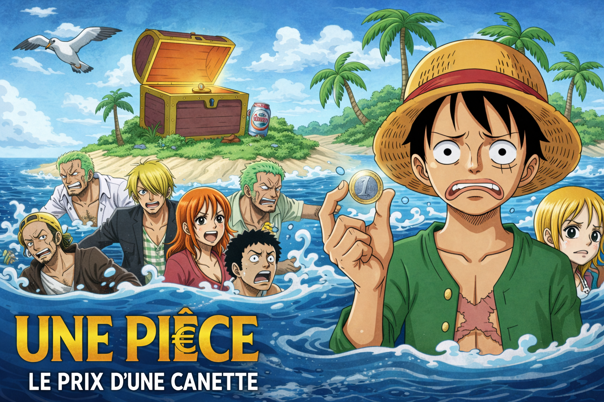

Une Piece : le prix d'une canette
Depuis son plus jeune âge, Monkey D. Luffy nourrit un rêve
absolu : devenir le Roi des Pirates et mettre la main sur le
légendaire trésor laissé par le Grand Pirate Gol D. Roger,
connu sous le nom de "One Piece". Un trésor si immense, si
puissant, qu'il conférerait à celui qui le trouverait
gloire, pouvoir et liberté absolue sur les sept mers.
Luffy rassemble donc son équipage, les Mugiwara : Zoro le sabreur
aux trois lames, Nami la navigatrice calculatrice, Usopp le
tireur mythomane, Sanji le cuisinier romantique, Chopper le
médecin renne, Robin l'archéologue mystérieuse, Franky le
charpentier cyborg, et Brook le musicien squelette.
Ensemble, ils affrontent des pirates légendaires, des
amiraux de la Marine, des gouvernements corrompus, des îles
volantes, des mondes sous-marins et des créatures
impossibles.
Des années de traversée. Des dizaines de
batailles épiques. Des sacrifices, des larmes, des victoires
arrachées de justesse. L'équipage se dépasse à chaque île,
défie des ennemis toujours plus puissants, et Luffy encaisse
des coups à faire tomber des buildings.
Après des années de
voyage à travers le Grand Line, après avoir vaincu des
warlords, des empereurs et des dieux vivants, ils atteignent
enfin Laugh Tale, l'île au bout du monde, là où Gol D. Roger
a caché le trésor ultime.
Ils ouvrent le coffre. C'est une
pièce de 1€.

PLAY